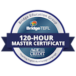

After years of customer service related work and as a photographer for a large company for 4 years, my interests outside of photography have brought me to finding ways to live and work where I desire. I've recently earned my certification in Teaching English as a Second Language (TEFL/TESOL) and begun learning how to become a Developer to increase my value as a remote worker. I'm looking to find work as a developer in a company that values a self-motivated, product and client-oriented individual, who never stops learning.
Associate's Degree (In Progress) Tarrant County Community College
TEFL/TESOL
Bridge Education Group
ACCET Accreditation recognized by U.S. Department of Education
